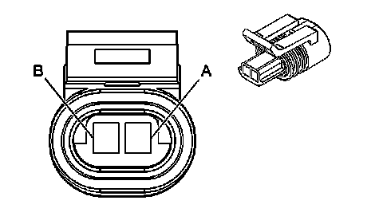
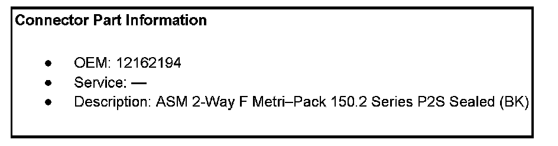
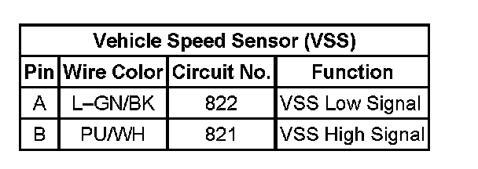

Operation CHARM
: Car repair manuals for everyone.
Home
>>
Cadillac
>>
2007
>>
Escalade ESV AWD V8-6.2L
>>
Repair and Diagnosis
>>
Powertrain Management
>>
Computers and Control Systems
>>
Vehicle Speed Sensor
>>
Diagrams
>>
4L80-E/4L85-E - Automatic Transmission
4L80-E/4L85-E - Automatic Transmission
Automatic Transmission Related Connector End Views
Vehicle Speed Sensor (VSS)


Vehicle Speed Sensor (VSS):
